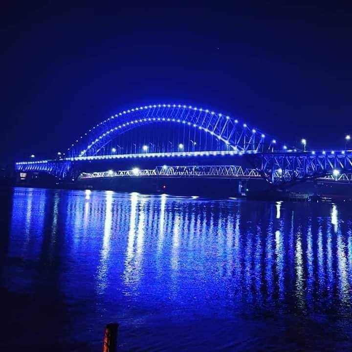

Kota Samarinda
Kota Samarinda dibelah oleh Sungai Mahakam dan menjadi gerbang menuju pedalaman Kalimantan Timur melalui jalur sungai, darat maupun udara. Samarinda terkenal dengan perkembangannya yang ekspansif seperti Pelabuhan Samarinda dan Pelabuhan Palaran yang keduanya merupakan pelabuhan tersibuk se-Kalimantan Timur